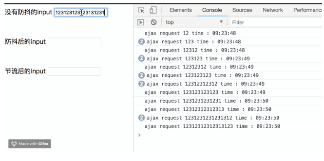
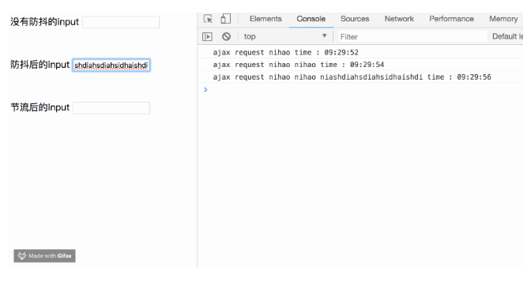
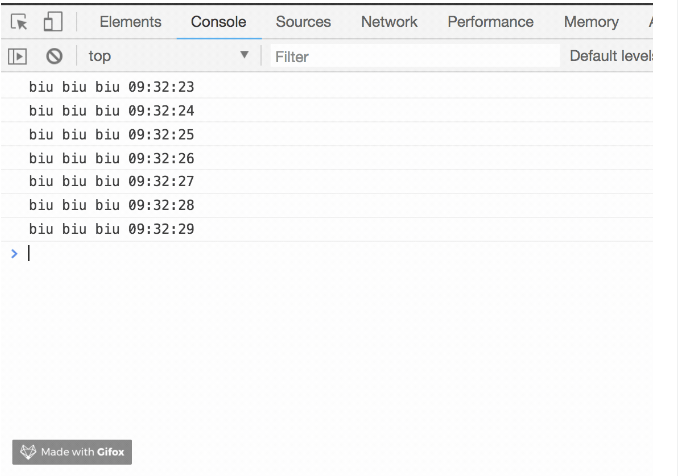
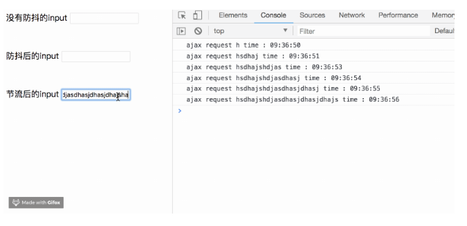
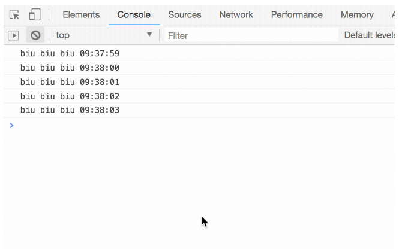

看一个🌰（栗子）：
//模拟一段ajax请求
function ajax(content) {
console.log('ajax request ' + content)
}
let inputa = document.getElementById('unDebounce')
inputa.addEventListener('keyup', function (e) {
ajax(e.target.value)
})看一下运行结果：

可以看到，我们只要按下键盘，就会触发这次ajax请求。不仅从资源上来说是很浪费的行为，而且实际应用中，用户也是输出完整的字符后，才会请求。下面我们优化一下：
//模拟一段ajax请求
function ajax(content) {
console.log('ajax request ' + content)
}
function debounce(fun, delay) {
return function (args) {
let that = this
let _args = args
clearTimeout(fun.id)
fun.id = setTimeout(function () {
fun.call(that, _args)
}, delay)
}
}
let inputb = document.getElementById('debounce')
let debounceAjax = debounce(ajax, 500)
inputb.addEventListener('keyup', function (e) {
debounceAjax(e.target.value)
})看一下运行结果：

可以看到，我们加入了防抖以后，当你在频繁的输入时，并不会发送请求，只有当你在指定间隔内没有输入时，才会执行函数。如果停止输入但是在指定间隔内又输入，会重新触发计时。 再看一个🌰：
let biu = function () {
console.log('biu biu biu',new Date().Format('HH:mm:ss'))
}
let boom = function () {
console.log('boom boom boom',new Date().Format('HH:mm:ss'))
}
setInterval(debounce(biu,500),1000)
setInterval(debounce(boom,2000),1000)看一下运行结果：

这个🌰就很好的解释了，如果在时间间隔内执行函数，会重新触发计时。biu会在第一次1.5s执行后，每隔1s执行一次，而boom一次也不会执行。因为它的时间间隔是2s，而执行时间是1s，所以每次都会重新触发计时
看一个🌰：
function throttle(fun, delay) {
let last, deferTimer
return function (args) {
let that = this
let _args = arguments
let now = +new Date()
if (last && now < last + delay) {
clearTimeout(deferTimer)
deferTimer = setTimeout(function () {
last = now
fun.apply(that, _args)
}, delay)
}else {
last = now
fun.apply(that,_args)
}
}
}
let throttleAjax = throttle(ajax, 1000)
let inputc = document.getElementById('throttle')
inputc.addEventListener('keyup', function(e) {
throttleAjax(e.target.value)
})看一下运行结果：

可以看到，我们在不断输入时，ajax会按照我们设定的时间，每1s执行一次。
结合刚刚biubiubiu的🌰：
let biubiu = function () {
console.log('biu biu biu', new Date().Format('HH:mm:ss'))
}
setInterval(throttle(biubiu,1000),10)
不管我们设定的执行时间间隔多小，总是1s内只执行一次。